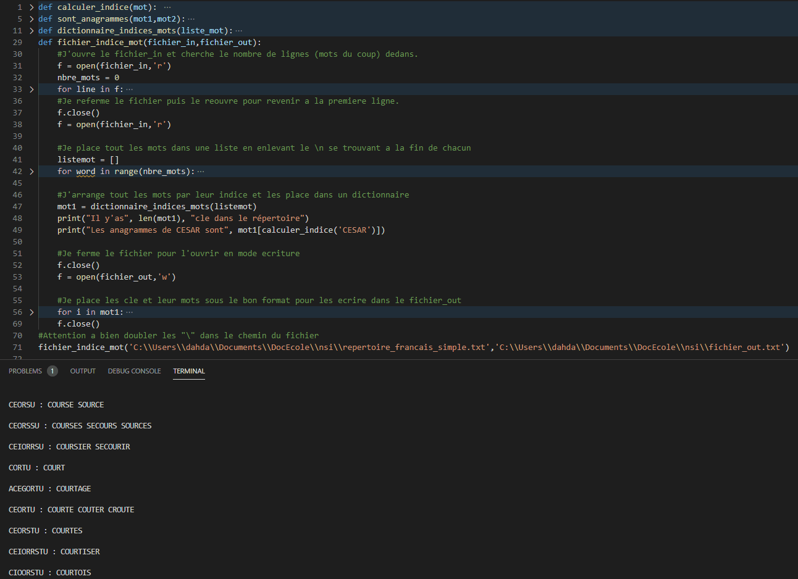

La majorite du travail en NSI se deroule sur les ordinateurs en autonomie et donc notament sur des travaux pratique et ou dirigé,nous allons donc vous presenter ceux que l'on a deja fait en commençant par les mini projet en python d'octobre
La majorite du travail en NSI se deroule sur les ordinateurs en autonomie et donc notament sur des travaux pratique et ou dirigé,nous allons donc vous presenter ceux que l'on a deja fait en commençant par les mini projet en python d'octobre
Apres avoir maitriser les bases de python et de la bibiliotheque turtle permettant de faire un affichage visuel du programme nous devions pour les vacances d'octobre choisir un projet parmis les 6 proposé à faire en groupe de 3 :
Notre groupe avait decidé de faire le mini projet de l'horloge les consignes etaient de creer un programme permettant d'afficher l'heure en chiffre qu'on lui donne en entree dans une horloge dessinée a l'aide de turtle et tout cela biensur devait etre codé en python ! Vous pouvez testez le resultat de notre projet si dessous : il suffit de reajuster la petite page repl.it interactive jusqu'as pouvoir voir clairement l'horloge et rentrer nimporte quelle heure dans la console, biensur sous format hh:mm puis appuyer sur entree et le programme va automatiquement afficher l'heure entrée dans l'horloge Meme si ca a été assez difficile de s'organiser au depart c'etait une experience tres agreable et un avant gout au monde professionel car on code jamais seul mais quasiment toujours en groupe surtout des enormes projets
La majorité du travail en classe se déroule sous forme de tp a faire apres avoir lu le cours, nous en avons fait au moins un par chapitre cette année mais j'ai decidé de vous en presenter un qui m'as particulierement plu a faire cette année !
Les dictionnaires sont un type contruit de variables que vous decouvrirez l'annee prochaine si vous prenez nsi ou que vous connaissez deja si vous vous etes aventuré assez loin sur france-ioi. Le tp demandais des activités tel que regrouper les mots qui sont anagrames tel que CRIME et MERCI pour pouvoir realiser cette tache on nous lache pas dans l'inconnu le travail est guidé il suffit de suivre la demarche mais le plus interessant est qu'as la fin de cette activité il y'avais un defi bonus ou il fallais grace a la methode que l'on a reussi a trouver dans le TP classer un repertoire de 20000 mot dans un nouveau fichier et voila ce que ça donne quand j'execute mon programme :  Il ne faut surtout pas avoir peur apres avoir vu ce genre de programme car si vous suivez en cours l'annee prochaine en specialité NSI vous aussi serez capable de faire de telles choses !
Vous etes dessus la maintenant ! Le projet a faire pour les dernieres vacances de notre annee est donc de creer un site web a l'aide de nos connaissances en html, css et javascript trois language dont je pense que vous connaissez deja deux : le couple html et css, si vous avez aimer ces languages en SNT j'ai une bonne nouvelle pour vous, on les approfondis encore plus dans la spécialite NSI et on rajoute un troisieme language permettant de rajouter du dynamisme a vos pages web : le javascript ! Ce site vous l'aurez compris a donc pour but de presenter la spé NSI aux secondes qui s'y interesserait. On a énormement travailler dessus en ésperant qu'ils vous a plus et qu'il vous ait aider dans le choix ou non de cette spécialité !